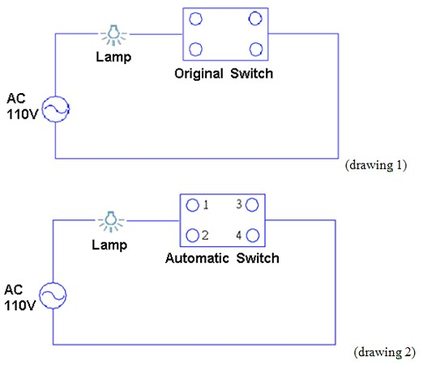
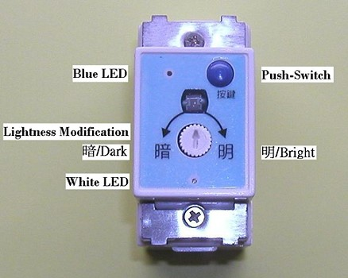

DISGUISED BURGLARPROOF AUTOMATIC LIGHTING SWITCH
Product Characters
| 1. | Light lighting at night time, pretend someone home, scare and stop the thief. |
| 2. | Same out-look as original switch, available to change directly. |
| 3. | Same as original power system, no need to connection new electric wire. |
| 4. | Keep original function of hand on/off the switch, very convenient on operation. |
| 5. | Easy fit, D.I.Y. available. |
Product Introductions
| 1. | When nobody home several days, do you worry about thieves breaking into? With security service cost high, and family burglarproof expensive and complicate? Our company provide this product to solve every problem, easy and cheap way to secure your home. |
| 2. | This product is easy to operate. The Press key as on / off lighting switch by hand at usual time. And when you will off long time, just press the key over 3 seconds, it will change to automatic system. Under automatic system, the light will turn on / off uncertainly at night time ( about 6-8 hours match our living habit at night), pretend someone home. Generally thief will have a look of our building to see how is going, make sure no one home to break into. When thief see the inner light lighting and several times later off, he will thought someone home and give up. And if you keep the light lighting whole day long, it's not only waste the power but also told the thief no one off the light, nobody home. |
| 3. | The size, out-looking same as traditional switch, easy to change. Same structure as original one no need new fit. |
| 4. | This product will judge day/night time by outdoor lightness to start the security system so fit place should be available for clear-cut the lightness. |
| 5. | Fit this product on different rooms, and all start the disguise security system when out. Each room light on or off on different time, look more like someone home, will get better effect. |
Product Picture
Operation Description
| 1. | Lightness modification, at best to do at evening time. On the condition without hide outside lightness, use flat screwdriver to modify till end left side and white LED light off, then turn right side to see white LED light on. Again slowly left modify to white LED light off. Put hand 10 cm from the sensitive case, hand shadow the case, then white LED will light on, hand off and LED light off. Then the sensitive case modify OK. |
| 2. | Press the push-switch once time, change automatic mode to manual mode, blue LED light lighting, means hand control the light on or off. |
| 3. | Press the push-switch more than 3 seconds, change to first step automatic mode, the blue LED light will shining. At night time randomly light on the lamp, and off 6-8 hours later. Another circulate next day. |
| 4. | Press the push-switch more than 6 seconds, change to 2nd step automatic mode, blue LED little lighting. Lamp will light on automatically when night coming, and light off 6-8 hours later. Another circulate next day. |
Product Specification
| Measurement | 44×22×37 mm |
| Line Wire | ψ1.6 or ψ2.0 mm cut cover 18mm |
| Voltage | AC 110V |
| Loading Range | 5W～200W tungsten lamp，10W～100W fluorescent lamp or power-save lamp |
| Power Draw | 10mW |
Assembly Direction

| 1. | Turn off the AC power source, and open the switch cases. Take off the wire, please clear up the copper wire if oxidized. |
| 2. | Put on one original wire to automatic switch hole 1 or 2, another wire on hole 3-4. |
| 3. | Fit on automatic switch, close the cover, turn on the AC power source will be OK. |
Notice
| 1. | Please put insulated glove before assembly, avoid electric shock. |
| 2. | Please take note product voltage and load specification. |
| 3. | Avoid sun-shine directly and wet. |
| 4. | A little brand save power lamps have different electronic circuit design, will cause noncommittal problem (flash). Please add a 0.1uF 400V polyester film capacitors parallel connection the lamps. |
Product Drawing Description
